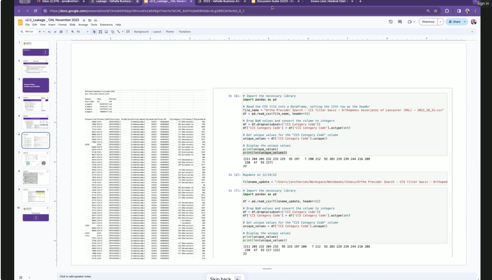

A BI Tool for Self-Insured Co's
Understanding User Workflows in Complex B2B Software
Overview
Themes: Human Computer Interaction, User Research A few designers were hired by a 100 person company. The company was engineering/data driven, and now started to see the cracks in having a UI that was built for internal users that was a 1:1 representation of the underlying data model. The two designers were the first designers to take a look at the UI since the conception of the product.
The Current App
This is a niche product. Most companies outsource healthcare insurance to a healthcare provider. Those that don’t pay cash for claims, but need a way to track claims across entire employee populations. Self-insured companies also constantly seek to provide better health insurance at lower costs, so this data is used to figure out what prescription drugs are costing the most money so cheaper providers can be brought it.
Here’s an example screen. You don’t need to know what it does, you just need to know that most screens looked a lot like this.
It was built for complex queries across multiple petabyte-sized databases that people inside the company built for customers. If you wanted to find out something that should have been easy like how much your company was spending on uncomplicated hospital births, you’d have to select some data from the medical db, clone it, carry it over to the financial part of the app, match user IDs from one to the other and then pull costs out of an infinitely side-scrolling UI. Then click Run in a form like below and keep your fingers crossed that your browser didn’t think the server fell over from the request.
As the product developed towards a focus on external clients, more and more layers of abstraction were created to give new users a simpler “Bird’s Eye View” of the data. Every time someone asked a simple question from the data that wasn't in a simple view, someone behind the scenes would perform db magic and add another pre-configured dashboard to an ever growing list of thousands. If you could guess the name that the developer gave the new dashboard, you were in luck. If you misspelled the dashboard name, or tried PMPM instead of PEPM in the title, then you were out of luck and would call Customer Service to give you the magical incantation.
Finding the Problem
To start this project, I did what I like to do with almost all projects, I try to get some sort of design brief. Usually this is a team activity since everyone in the org wants something different from the project, and when I get to the project, no one’s asked everyone what they want from the project, and no one’s typed up all those responses in a nice and tidy design brief for me.
I had my list of talking points and away I went:
- Users and Customers
- Problems
- Solutions Today
- Business Challenge
- Solution Ideas
- Budget
- Adoption Strategy
- User Metrics
- Business Impact
- Anticipated Risks
After a few calls with the higher-ups, it was obvious that this project was starting from ground zero in terms of customer knowledge. The team identified a focus, the Casual User, but didn’t know how many there were, their frequency of use, or job titles in their companies. No one knew how this project would impact the business aside from a loose notion that they were behind competitors. And the only other finding was that there was an “extremely low volume” of users who pulled data out of the platform to perform calculations in Excel… the very function that this BI Tool was designed for.
Doing the Research
I won’t bother you with all the details of how the research went down. Since I worked with a UI Designer with zero research experience, I figured I’d go with a super standard Contextual Design style research approach. We worked with a PM who collected a list of participants, we put together a light contextual design interview template, and scheduled dozens of video calls over the next few weeks.
A Sample of How All This is Supposed to Work
Management wasn’t sure about this style of research. We ended up building out a flow to show how a real research insight led all the way to a new design including pixel-perfect mockups. I know I know! Don’t show pixel-perfect mockups! Don’t build screens based on a single finding! But after showing a bunch of wiz-bang HCI research models and talking about process for weeks, management threatened to shut down the project if they didn’t see something. So we took one user interview and used that to run through an example of how research leads to new designs.
One participant was a broker for health insurance products. He started his own broker business and was pretty tech savvy. We hopped on a call and gave the usual spiel of how we were investigating how real people used the product and wanted to watch him do the actual work he does, explaining to us as he went along.
Magical NPI Numbers. He was currently tasked with finding out what claims were being left on the table by his client. His client was a care provider and they felt like claims were being sent out to other providers even though they could perform them in-house. This was a perfect task for the platform! His client worked under a bunch of names like Something Something Orthopedic and Something Something Medical. You’d think you could just type those in, but he needed a unique ID for each name the company operated under. To make things worse, he didn’t know what that unique ID was called, so he couldn’t even look up his client in the platform. He finally figured out it was called an NPI number.
After he got the NPI numbers, he could go into the platform and search for those to find what claims were performed by his client. He found thousands of claims in the platform, but just needed the unique claim IDs, he didn’t need every instance of the ID, so he exported the whole set and did a little python magic to pull out all the unique claim numbers.

From there he went back to the platform and did a search for all those claim numbers.
And from there, he could finally filter out the claims that weren’t performed by his client.
To recap, the user process was:
- Find codes that corresponded to the client names
- Search the database for claims associated with those IDs
- Create a list of claim type IDs and remove duplicates
- Search the database for the claim type IDs
- Filter out claims that had the client IDs
- Add it all up and see what money was left on the table from outsourcing claims that could have been done in-house
We walked through how we went from interview transcript to unsorted findings:
To moving those findings into pre-determined models for data flow, sequences of events, and cultural pressures:
”I would be fearful if [working in the platform] would convey incompetence, I’d rather use Python”
Showing how this participant had clients who wanted to see the underlying work, but the participant felt like these workflows were too complex and prone to error and didn’t want to be perceived as incompetent.
After, we talked about how we developed How Might We statements:
- Help users skip all the code based middle steps
- Turn insights into composable Data Journals
- Move from guess-and-check to embedded muscle memory
- Make easy things discoverable
And how one HMW statement could turn into wireframes of a new way of doing work. Instead of searching within a field for a piece of data, what if users could start with a piece of data and find all the instances of that bit of data and what fields it was in:
And how that could look inside the current design aesthetic.
They loved it. And the concept was strong. I haven’t seen many UIs where the data is known but the field is not, but a simple search across all fields and then showing what that data is found in, is at least a good first-pass solution.
What We Found
I won’t bore you with all the breakdowns or all the hmws but you can check them out if you want. We also came up with Areas of Focus, but the real interesting part was when we presented two particular insights.
Insight 1: Cascading Data Issues
Say you want to answer something that seems easy… like finding all the claims your client is leaving on the table. You’d first probably want to look at all the claims data. But you can’t. The interface can only show the first 500 rows. Now suppose you find a mistake in the data. February of last year had 1300 claims, March had 1200 claims, and all of the sudden in April you had a whopping 3500 claims. You dig a little deeper and it turns out you’ve got duplicate claims in April. The system must have slurped up some data feed twice. But of course, the UI doesn’t allow any editing of data. So to fix some problems to help users solve easy questions, there were actually a number of UI and db issues that needed to be resolved.
Insight 2: Extract-Transform-Load
Extract-Transform-Load, or ETL is a pretty common practice. It even has a Wikipedia Page! I learned way too much about this back in my LegalSifter days. What do people do to fix this? They pull all of the data out of the platform and do everything in spreadsheet software–like any reasonable person would. You Extract the data from the platform, Transform that data in a spreadsheet app, and then you Load that into presentation software to show to the rest of your org. In our research, 84% of all participants used some form of Extract-Transform-Load in their regular work. And remember the one finding that came out of the attempt to build a design brief was that this was an “extremely low” occurrence.
Conclusion
We presented all this to the CEO and the rest of the management staff. We got a lot of push back. “Never say the data is wrong” and “If this is true, our product isn’t worth what we thought it was” were some memorable quotes. It was shocking considering we had screen recordings showing how months of data were unusable in the system because (and don’t quote me on this), the data was wrong. And then I heard what every designer loves the most.
Elliott, I know you’re gonna hate this… but just make it pretty
– CEO
Research was shut down. We were told to focus on navigation and “look and feel”. We moved a bunch of stuff we saw users constantly navigate to into the home screen.
Levels of the System:
Levels of the System Slide And then we added these chips everywhere… like everywhere. There was a marketing deck talking about the “Level of the System” and we were told we had to include them. You can’t win all the fights, and it was an easy compromise to get worthwhile functionality into the home screen.
After that, I rolled off the project. I’m not really a “make it pretty” kind of designer, the junior graphic designers are way better and faster at that than me, and there weren’t going to be any big design changes or user research.
What did I learn? I could easily say this was a simple case of misalignment. I could say that I didn’t bring management along for the ride constantly getting soft approval along the way, but in reality, the CEO met with us about every 6 weeks, and we had a PM constantly relaying progress to the whole leadership team AND a rep from the dev team so they could get wind of big changes before they had to do anything. We even went through sizing exercises with the devs on each design concept.
Here’s what I’ve got:
Plan for the Inconvenient truths
“It is difficult to get a man to understand something when his salary depends on his not understanding it.” – Upton Sinclair Data doesn’t speak for itself. It comes with baggage and history and not understanding how data fits into a larger organizational context will lead to improperly presenting the information to stakeholders. At the start of the project, I should have pushed harder for answers. When asking internal stakeholders about their fears, I didn’t get a response, but from most facilitation research, I should have known that I should have led in the vulnerability of addressing reasons why the project would fail at the start.
In the middle of the project, I could have facilitated more conversations around what the findings meant. I heard statements like “if this is true, our product isn’t worth what we thought it was”. I took that as a meaningful recognition of the lacking value of the product, that would propel the team into conversations around how we could fill in the gaps. But instead, it turned into a view that user research could be dangerous. Usability research is inevitably focused on finding flaws but the presentation of breakdowns in typical HCI models buries the lede. When presenting an individual finding and tying that together with solutions, there’s an ease of tension knowing that the problem is fixable. When presenting large scale insights without product concepts to resolve those issues, it’s kind of like dumping years of work onto the plate of the organization without a roadmap to resolution. In the project roadmap there were plans for visioning sessions to talk through potential product concepts to tackle these inconvenient truths, but those conversations weren’t on anyone’s calendars yet. In the future, I should tightly couple conversations around insights with conversations around solutions so the momentum can carry an organization over rough terrian, and so I’m never dropping a year of work onto anyone’s plate without showing how I’m going to be there all the way through production with a plan in hand.